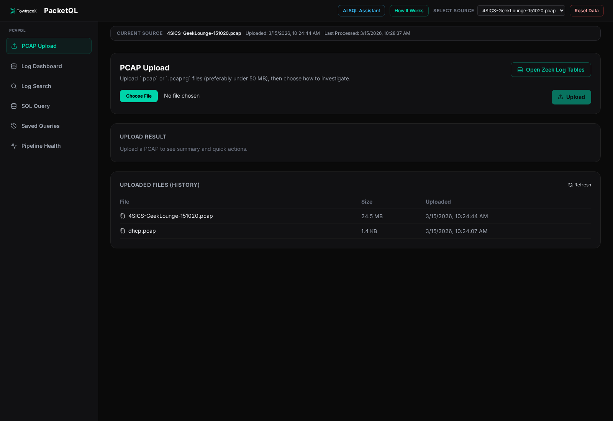
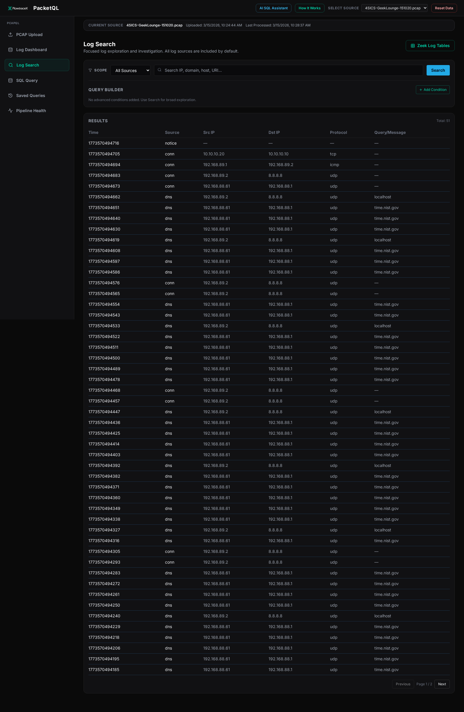
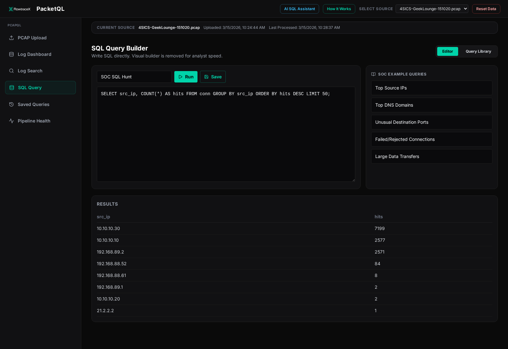

PCAP Upload
Upload `.pcap` and `.pcapng` files, see processing status, and move directly into dashboard or search workflows.

This public demo is intentionally read-only. It is designed to show the PacketQL workflow with curated packet captures and investigation views, without exposing raw upload or destructive runtime operations.
conn, dns, and noticeThe product pipeline is intentionally simple for analysts, while still using a strong backend processing flow.
Users start with a packet capture.
Zeek parses traffic into protocol-specific logs.
Streaming events are buffered through Kafka in KRaft mode.
Events are normalized and enriched in real time.
Structured outputs become SQL-queryable investigation data.
Analysts investigate with dashboard, search, and SQL.
These screenshots are captured from the actual PacketQL interface and show the core analyst workflow.
Upload `.pcap` and `.pcapng` files, see processing status, and move directly into dashboard or search workflows.

Investigators can filter and search normalized data across protocol tables with fast pivots into deeper detail.

Analysts can run SQL directly against structured investigation data for fast hunting and custom exploration.

This hosted page is intended as a clean product preview for customers and stakeholders.
Curated PCAP sources are used to keep the experience stable, predictable, and easy to explain.
The recommended deployment model for the real product is the bundled Docker workflow described in the GitHub repository.